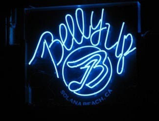

Belly Up
143 South Cedros Avenue, Solana Beach, CA 92075
858-481-8140
Website: Bellyup.com
Upcoming Events
Dec 12: Pepper, the Movement, New Beat Fund
Dec 14: For the Sender: Sean & Sara Watkins
Dec 16: The Brian Setzer Orchestra
Dec 17: Nancarrow, Bastard Sons of Johnny Cash
Dec 18: Johnny Marr and Meredith Sheldon
Dec 19: Who's Bad: Michael Jackson tribute
Dec 20: Ugly Sweater Party: Young Guns, more
Dec 21: Dick Dale's Holiday Show
Dec 22: The Growlers
Dec 26: A Cash'd Out Christmas
Dec 27: Greyboy Allstars
Dec 28: The Aggrolites and Creepy Creeps
Dec 29: Tainted Love '80s Dance
Dec 30: Cracker and Camper Van Beethoven
Dec 31: Donovan Frankenreiter
Jan 1, 2015: Anuhea and Tribal Theory
Jan 2, 2015: Pato Banton
Jan 3, 2015: 5th Annual Beat Farmers Hootenanny
Jan 4, 2015: Trombone Shorty & Orleans Avenue
Jan 9, 2015: Katchafire
Jan 10, 2015: Ozomatli
Jan 11, 2015: The Jayhawks
Jan 14, 2015: Marc Cohn
Jan 15, 2015: Dead Kennedys, White Kaps, HTTH
Jan 16, 2015: Wild Child
Jan 17, 2015: Tower of Power and Ben Powell Duo
Jan 18, 2015: Six String Society
Jan 19, 2015: Randy Rogers Band and Wade Bowen
Jan 22, 2015: MarchFourth Marching Band
Jan 23, 2015: Big Head Todd & The Monsters
Jan 25, 2015: Los Lobos and Hamish Anderson
Jan 27, 2015: The Wailers
Jan 29, 2015: Keller Williams and the Motet
Jan 30, 2015: Dave Alvin, Phil Alvin & Guilty Ones
Jan 31, 2015: Abbey Road vs Jumpin' Jack Flash
Jan 31, 2015: Lovebirds, Tolan Shaw, Dr. Seahorse
Feb 2, 2015: Todd Snider and Reed Foehl
Feb 3, 2015: Lettuce and Break Science
Feb 5, 2015: Kenny Wayne Shepherd Band
Feb 7, 2015: Dead Man's Party and Betamaxx
Feb 8, 2015: Jim Brickman
Feb 9, 2015: Battle of the Chef's Bands
Feb 10, 2015: Granger Smith & Earl Dibbles, Jr.
Feb 12, 2015: Zion I: The Rapture Tour
Feb 13, 2015: ALO and T Sisters
Feb 14, 2015: Ozomatli
Feb 17, 2015: Over the Rhine and William Fitzsimmons
Feb 18, 2015: Lotus
Feb 19, 2015: The Taj Mahal Trio
Feb 21, 2015: Steve Poltz, Rugburns, Shook Twins
Feb 22, 2015: Zap Mama & Antibalas
Feb 28, 2015: Pine Mountain Logs
Mar 4, 2015: Galactic
Mar 6, 2015: Super Diamond
Mar 10, 2015: Joshua Radin and Rachael Yamagata
Mar 11, 2015: Hurray for the Riff Raff
Mar 12, 2015: Martin Sexton and Brothers McCann
Mar 13, 2015: Twin Shadow
Mar 14, 2015: Tommy Castro & the Painkillers
Mar 20, 2015: Railroad Earth
Mar 25, 2015: Gang of Four
Mar 29, 2015: Jonny Lang
Mar 31, 2015: Kitty, Daisy & Lewis
Apr 1, 2015: Ed Kowalczyk: Throwing Copper Unplugged
Apr 24, 2015: The Dead Milkmen
May 3, 2015: They Might Be Giants
May 7, 2015: Herb Alpert & Lani Hall